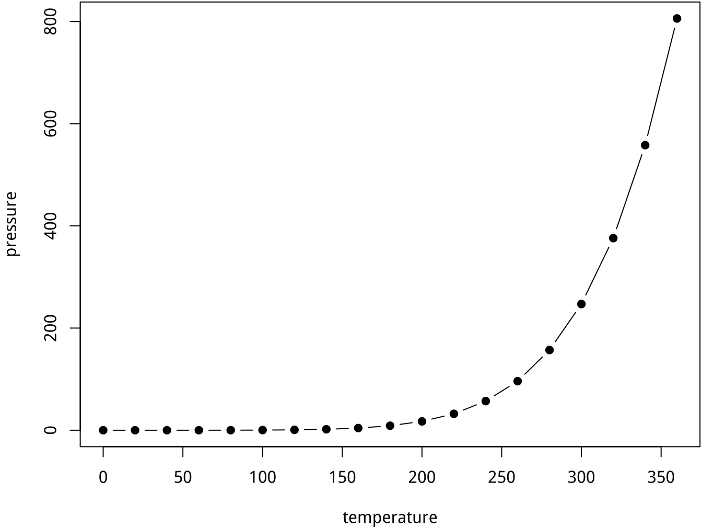

Chapter 1 Introduction
You can label chapter and section titles using {#label} after them, e.g., we can reference Chapter 1. If you do not manually label them, there will be automatic labels anyway, e.g., Chapter 3.
Figures and tables with captions will be placed in figure and table environments, respectively.

Figure 1.1: Here is a nice figure!
Reference a figure by its code chunk label with the fig: prefix, e.g., see Figure 1.1. Similarly, you can reference tables generated from knitr::kable(), e.g., see Table 1.1.
| Sepal.Length | Sepal.Width | Petal.Length | Petal.Width | Species |
|---|---|---|---|---|
| 5.1 | 3.5 | 1.4 | 0.2 | setosa |
| 4.9 | 3.0 | 1.4 | 0.2 | setosa |
| 4.7 | 3.2 | 1.3 | 0.2 | setosa |
| 4.6 | 3.1 | 1.5 | 0.2 | setosa |
| 5.0 | 3.6 | 1.4 | 0.2 | setosa |
| 5.4 | 3.9 | 1.7 | 0.4 | setosa |
| 4.6 | 3.4 | 1.4 | 0.3 | setosa |
| 5.0 | 3.4 | 1.5 | 0.2 | setosa |
| 4.4 | 2.9 | 1.4 | 0.2 | setosa |
| 4.9 | 3.1 | 1.5 | 0.1 | setosa |
| 5.4 | 3.7 | 1.5 | 0.2 | setosa |
| 4.8 | 3.4 | 1.6 | 0.2 | setosa |
| 4.8 | 3.0 | 1.4 | 0.1 | setosa |
| 4.3 | 3.0 | 1.1 | 0.1 | setosa |
| 5.8 | 4.0 | 1.2 | 0.2 | setosa |
| 5.7 | 4.4 | 1.5 | 0.4 | setosa |
| 5.4 | 3.9 | 1.3 | 0.4 | setosa |
| 5.1 | 3.5 | 1.4 | 0.3 | setosa |
| 5.7 | 3.8 | 1.7 | 0.3 | setosa |
| 5.1 | 3.8 | 1.5 | 0.3 | setosa |
You can write citations, too. For example, we are using the bookdown package [@R-bookdown] in this sample book, which was built on top of R Markdown and knitr [@xie2015].